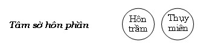

|
BuddhaSasana Home Page |
Vietnamese, with Unicode VU Times font |
Tâm Sở Vấn Đáp
Phần II - Tâm sở Bất thiện
(Akusalacetasikā)
Tỳ
kheo Chánh Minh
Chùa Bồ Đề, Vũng Tàu
|
Xin lưu ý: Cần có phông UnicodeViệt-Phạn VU Times cài vào máy để đọc các chữ Pàli. |
|
[04] D- Tâm sở hôn phần. Biểu đồ tâm sở hôn phần:  121- HỎI: Thế nào là tâm sở Hôn trầm (thīnacetasika)? Đáp: Thīna, xuất nguyên từ căn THE (co rút lại) + NA. The + na = thena = thāna = thīna. [177] Như vậy, theo nghĩa ban đầu thì hôn trầm là “co rúm lại” Trong bộ Vibhaṅga (Phân tích) giải thích thīna (hôn trầm) có nhiều ý nghĩa như sau: Ở đây, thế nào là hôn trầm? - Chỉ là sự không bén nhạy của tâm, không thích nghi, sự chần chừ, trầm lặng, lười biếng, dã dượi (của tâm)...[178] Hôn trầm”là sự không nhạy bén của tâm (tâm không mạnh mẽ)”, tức là khi ấy tâm không muốn hoạt động, “co rúm” lại như lông gà gặp phải khí nóng của lửa. Hôn trầm là “sự không thích nghi của tâm”, tức là đối với việc làm nào đó, tâm cảm thấy không phù hợp. Như khi nghe pháp, người phật tử cảm thấy không thích thú, vì “không hiểu” hoặc “quá nhàm”.... “Sự lười biếng” hay “dã dượi” là hai ý nghĩa nổi bật nhất của hôn trầm. Hôn trầm làm cho tâm mất đi sự linh hoạt, hoạt bát. Khi hôn trầm có sức mạnh sẽ làm cho tâm dừng lại, không muốn hoạt động, chỉ muốn “tìm giấc ngũ”. Ví như người đi đường xa, không muốn đi nữa (không thích nghi với sự đi) nên dừng lại. Pāli có giải thích: Thīna (hôn trầm) là trạng thái tâm bịnh hoạn (citta gelaññaṃ) [179]. Lẽ thường, người bịnh thường không muốn hoạt động, cũng vậy,tâm bịnh là tâm không muốn hoạt động. Tâm không muốn hoạt động là do tâm sở hôn trầm tác động. 123. HỎI: Thế nào là tâm sở thụy miên (middhacetasika)? ĐÁP: Middha xuất nguyên từ căn Middh, nghĩa là “không có khả năng hoạt động” [180]. Middha là trạng thái bần thần, buồn ngủ, uể oải. Nó giống như người khi nghĩ đến “phải vượt khoảng đường xa, cảm thấy mệt mỏi, uể oải (dù chưa thực hiện)”. Middha phản ánh tâm trạng không hăng hái, năng hoạt. Middha là cách dãdượi, yếu đuối của tâm sở, như có Pāli sau: Kāya gelañña: Thân bịnh hoạn. Thân ở đây ám chỉ các tâm sở phối hợp với tâm. Bộ Vibhaṅga có giải thích: Ở đây, thế nào là thụy miên? Chỉ là sự không bén nhạy của thân, không thích nghi, sự che lấp, đậy khuất, bít ngăn bên trong, hôn mê, bần thần, sự buồn ngủ...[181] Một ý nghĩa khác của thụy miên là “chậm chạp”, ví như trạng thái di chuyển của người bịnh nặng hay giống như sự di chuyển của người quá mệt mỏi hay gần kiệt sức. Sách Visuddhimagga (Thanh tịnh đạo) có giải thích về hôn trầm vàthụymiên như sau: Hôn trầm có đặc tính (lakkhaṇa): Thiếu năng lực, mất hết nghị lực. Thụy miên có đặc tính: Không thích hợp với công việc, chậm chạp. Tuy cả hai tâm sở này luôn đi chung với nhau, nhưng mỗi tâm sở có những điểm giống nhau, đồng thời cũng có những nét khác nhau. Chúng giống nhau ở điểm: - Làm cho các pháp đồng sanh với chúng mất khả năng phát triển, ngăn chận sự năng hoạt của các pháp đồng sanh, khiến cho các pháp đồng sanh trở nên “cứng sượng”. - Là pháp đối nghịch của tinh tấn. Một khi hôn trầm thụy miên sinh khởi thì sự tinh tấn sẽ lui sụt, trạng thái bần thần, dã dượi, buồn ngủ xuất hiện ngay, đó là đặc trưng của hai tâm sở này. - Là pháp đối nghịch của “thích ứng – kammañnatā”. Chúng làm cho tâm cùng tâm sở khác trở nên ‘cứng sượng”, khó sử dụng. Điểm khác biệt của chúng là: - Hôn trầm làm cho tâm mất đi khả năng linh hoạt, tâm trở nên “cứng đờ”. Hôn trầm trực tiếp đối nghịch với tâm sở Tâm thích ứng (cittakamaññatā cetasika). - Thụy miên làm cho các tâm sở đồng sanh trở nên uể oải, chậm chạp, không muốn hoạt động. Thụy miên trực tiếp đối nghịch vối tâm sở Thân thích ứng (kāyakammaññatā cetasika). Hôn trầm, thụy miên khi phát triển mạnh sẽ trở thành một chướng ngại cho thiền định hay Đạo - quả siêu thế, gọi là hôn thụy cái (thinamiddha nīvāraṇa). 124- HỎI: Phải chăng sự uể oải hay buồn ngủ đều do hôn trầm và thụy miên chi phối?. Hôn trầm và thụy miên hiện khởi rõ nhất vào lúc nào? ĐÁP: Tuy phần lớn là như thế, nhưng không phải đều do hôn trầm và thụy miên chi phối. Đôi khi thân xác năng hoạt quá độ, thân xác cần phải nghỉ ngơi và khi ấy cảm thấy buồn ngủ, mặc dù tâm vẫn đang muốn hoạt động, như trường hợp Đức Ānanda tinh cần hành đạo, nhưng thân quá mệt mỏi. Ngài suy nghĩ “ta hãy nghỉ ngơi giây lát rồi tiếp tục hành đạo”. Điển hình rõ nhất là: Các vị Alahán không còn phiền não hôn trầm, nhưng các vị vẫn phải ngủ vì sắc pháp của các Ngài sau một thời gian hoạt động cần phải nghỉ ngơi và khi ấy tâm các Ngài rơi thẳng vào luồng hữu phần (bhavaṅga). Có lần, khi Đức Thế Tôn vào lúc đêm gần mãn, Ngài nằm nghỉ với tư thế nằm của con sư tử, nằm xuống phía hông bên phải, hai chân gác lên nhau, chánh niệm tỉnh giác và nghĩ đến thức giấc. Một ác ma đi đến Đức Thế Tôn, nói rằng:
Đức Thế Tôn trả lời:
Bài kinh trên xác nhận bậc Thánh Alahán vẫn có “sự ngủ”, vì kinh văn ghi “tưởng thức giấc”. Và Đức Thế Tôn xác nhận: “Vị ấy nếu có ngủ”. Sự ngủ nghỉ ấy là do sắc pháp sau thời gian hoạt động cần phải nghỉ ngơi. Ngay cả sắc pháp vô mạng quyền như cây cối, sau thời gian hoạt động chúng cũng cần nghỉ ngơi (ngay cả những cơ khi, nếu tận dụng quá công suất cũng dễ hư hoại). Hôn trầm và thụy miên hiện khởi rõ nhất vào lúc sắp ngũ và khi vừa thức giấc. Một số người khi tỉnh giấc thường có trạng thái “không muốn hoạt động hay uể oải, hoạt động một cách chậm chạp”. 125 - HỎI: Tứ ý nghĩa của tâm sở hôn trầm ra sao?. ĐÁP: Tứ ý nghĩa của tâm sở hôn trầm là: - Trạng thái: Chận đứng sự siêng năng (anussāhana lakkhaṇa). - Phận sự: Rời bỏ tinh tấn (viriyāpanayana rasaṃ). - Thành tựu: Lui sụt (samsījana paccupaṭṭhānaṃ). - Nhân cần thiết: Không khởi sinh tác ý đúng (yonisomanasikāra padaṭṭhānaṃ). Giải: - Trạng thái: Tâm thường năng động linh hoạt, nhưng khi có hôn trầm sanh khởi tâm có trạng thái uể oải, muốn dừng lại. Như người đi đường xa, cảm thấy mệt mỏi cần phải dừng lại để nghỉ ngơi. . Một người khi thực hiện một việc nào đó, hoặc khi đang tu tập, nhận thấy rằng “tâm không muốn tiếp tục công việc đang làm”. Đó là trạng thái của hôn trầm. - Phận sự: Hôn trầm làm cho tâm không có hứng thú trong việc đang thực hành, lìa bỏ sự thực hành để rơi vào sự yên nghỉ. Đây là phận sự của hôn trầm. - Thành tựu: Một việc làm hay một thời thiền tập bị bỏ dở, không thực hiện trọn vẹn như ý nghĩ ban đầu. Đây là sự thành tựu của hôn trầm, hôn trầm khiến tâm rơi vào trạng thái “cứng đờ” không thể tiếp tục việc đang thực hiện. Những người quen lười nhát, chẳng muốn làm việc chi cả, xem như đang bị hôn trầm - thụy miên vây khổn. - Nhân cần thiết: Không sinh khởi tác ý đúng là nhân gần để sinh khởi hôn trầm, như Phật ngôn: - “Này các tỳ khưu, do không khởi sinh tác ý đúng (ayoni so manasikāra), hôn trầm, thụy miên chưa sinh được sinh khởi và hôn trầm, thụy miên đã sinh, đi đến tăng trưởng quảng đại.”[183] Nhưng cụ thể là loại tác ý nào để hôn trầm, thụy miên không sanh lên? Chúng ta biết rằng: “Khi hôn trầm, thụy miên sinh lên sẽ làm cho tinh tấn bị lui sụt và thối giảm. Hai pháp này là kẻ đối nghịch của tinh tấn, như vậy tác ý đúng trong trường hợp này là tác ý đến nhân làm cho tinh tấn sinh khởi”. Nhân cần thiết làm cho tinh tấn sinh khởi là “nghĩ đến tám điều khổ nạn (saṅvegavatthu)”. Tức là:
Khi tác ý đến 8 điều này nảy sinh kinh sợ những cái khổ ấy, làm sinh khởi tinh tấn. Đó là tác ý đúng trong trường hợp này.Và ngược lại, không tác ý đến những điều này, gọi là không sinh khởi tác ý đúng. Lại nữa, tâm sở hôn trầm trực tiếp đối nghịch với tâm sở tâm thích ứng (cittakammaññatā), như thế tác ý đúng ở đây là tác ý đến nhân sinh khởi tâm sở tâm thích ứng (sẽ giải thích trong phần những tâm sở tốt đẹp – sobhanacetasikā). 126- HỎI: Tứ ý nghĩa của tâm sở thụy miên ra sao? ĐÁP: Tứ ý nghĩa của tâm sở thụy miên là: - Trạng thái: Không thích hợp với việc làm (akammaññatā lakkhaṇaṃ). - Phận sự: Che đậy (tâm) (onayharasaṃ). - Thành tựu: Ngủ mơ màng hay buồn ngủ (pacalāayika paccupat.ṭhāṇa). - Nhân cần thiết: Không khởi sinh tác ý đúng (ayoni so manasikaara padaṭṭhāṇaṃ). Giải: - Trạng thái: Chữ kammaññatā nghĩa là “sự sẵn sàng, sự thích ứng”. “Không thích hợp với việc làm” là không sẵn sàng tiếp tục công việc đang thực hiện hay không thích thú với việc đang diễn tiến. Ở đây, “không thích hợp” ám chỉ “trái ngược với khuynh hướng thường có”. Nghe hay làm những việc không phù hợp với khuynh hướng, thường không thích thú, chán nản rồi rơi vào uể oải, dã dượi. Trong kinh Sunakkhatta (Thiện Tinh kinh) [184]. Đức Phật có dạy cho Sunakkhatta người Licchavī. Đại ý như sau: “Với người thiên về vật chất thế gian, khi câu chuyện khởi lên liên hệ đến bất động thì họ không để ý , không lóng tai hay cố tìm hiểu. Trái lại họ sẽ thích thú khi nghe những câu chuyện liên hệ đến vật chất thế gian...”. Cho dù người ấy biết “việc ấy là tốt đẹp”, nhưng vì không thích thú nên dễ chán nản. Như một số Phật tử tuy biết “học Phật ngôn là điều tốt”, nhưng xem kinh được vài trang thì chán nản hay buồn ngủ. - Phận sự: Chữ onayhana xuất nguyên từ động từ onayhati = ava + căn nah (buộc, cột, quấn) + ya) có nghĩa là “bao bọc, che đậy”. Phận sự của tâm sở thụy miên là làm cho tâm không nhận thức được cảnh. Và điều này chúng ta thấy rất rõ, một khi lơ đảng thì sẽ không nhận thức được rõ ràng, nó như có tấm màn che đậy bên ngoài khiến người có mắt không nhìn rõ vật bên trong. - Thành tựu: Thành tựu của tâm sở thụy miên là sự buồn ngủ. Điều này cũng dễ hiểu. - Nhân cần thiết: Tương tự như nhân cần thiết sinh khởi tâm sở hôn trầm, nhân sinh khởi cho thụy miên là “không khởi sinh tác ý đúng”. Tác ý đúng ở đây là: “Có sự kiên trì tìm hiểu những điều có lợi ích, dù không thích hợp với khuynh hướng”. Trực tiếp đối nghịch với tâm sở thụy miên là tâm sở Thân thích ứng (kāyakammaññatā cetasika). Nên tác ý đúng ở đây là làm sinh khởi nhân phát sinh tâm sở Thân thích ứng. 127- HỎI: Khi hôn trầm thụy miên sinh khởi, phải trừ diệt ra sao? Đáp: Trong kinh có ghi nhận: Khi Đức Moggallāna xuất gia trong giáo pháp này, Ngài tinh cần hành đạo, nhưng bị phiền não là hôn trầm chiếm ngự tâm, khi hành thiền Ngài bị ngủ gục. Với thiên nhãn, Đức Thế Tôn trông thấy Ngài Moggallāna (Mụckiềnliên) đang ngủ gục (pacalāyamāno) trong làng Kallavāḷamutta, Đức Thế Tôn dùng thần thông xuất hiện trước mặt Ngài Moggallāna và chỉ dạy phương pháp trừ diệt hôn trầm, có bảy cách như sau:[185] - Này Moggallāna, khi nào ngươi trú có tưởng (saññissa) [186] và thụy miên xâm nhập ngươi, chớ có tác ý đến nó (mā manasikāra), chớ có tưởng nhiều đến nó (saññaṃ mā bahulaṃ akāsi). Sự kiện này có thể xảy ra, do ngươi trú như vậy, thụy miên ấy được đoạn diệt. Đoạn kinh trên có nghĩa là: Khi nhận biết tâm đang bị thụy miên xâm nhập, hành giả đừng nghĩ đến việc ngủ, đừng suy nghĩ nhiều về “ngủ nghỉ”. - Nếu trú như vậy và thụy miên ấy không được đoạn diệt, thời này Moggallāna, với tâm của ngươi, hãy tùy tầm, tùy tứ, với ý hãy tùy quán pháp như đã được nghe, như đã học thuộc lòng. Sự kiện này có thể xảy ra, do ngươi trú như vậy, thụy miên ấy được đoạn diệt. Tức là khi thấy thụy miên xâm nhập tâm, hãy quán xét pháp đã được nghe được học, để làm tăng trưởng sức mạnh của Tầm, Tứ. Khi Tầm, Tứ có sức mạnh thì hôn trầm , thụy miên bị đẩy lui. - Nếu trú như vậy và thụy miên ấy không được đoạn diệt, thời này Moggallāna, ngươi hãy đọc tụng pháp một cách rộng rãi như đã được nghe, như đã học thuộc lòng. Sự kiện này có thể xảy ra do ngươi trú như vậy, thụy miên ấy được đoạn diệt. Tức là tụng kinh nhiều lên, do đó thụy miên có thể bị diệt trừ. - Nếu trú như vậy và thụy miên ấy không được đoạn diệt, thời này Moggallāna, ngươi hãy kéo (āvijeyyāsi) hai lỗ tai và lấy tay xoa bóp chân của ngươi. Sự kiện này có thể xảy ra ..... - Nếu trú như vậy và thụy miên ấy không được đoạn diệt, thời này Moggallāna, ngươi hãy từ chỗ ngồi đứng dậy,lấy nước rữa mắt (anumajjati), nhìn về phía chân trời, nhìn lên các vì sao nhấp nhánh (tārakarūpāni).Sự kiện này... - Nếu trú như vậy và thụy miên ấy không được đoạn diệt, thời này Moggallāna, ngươi hãy tác 1y đến quang tưởng.... - Nếu trú như vậy và thụy miên ấy không được đoạn diệt, thời này Moggallāna, ngươi hãy trú tâm trên chỗ kinh hành (cankamam), với tưởng trước mặt, tưởng sau lưng (pacchāpuresaññī), với căn hướng nội, với ý không hướng ngoại. Sự kiện này... Giải: “Tưởng trước mặt và sau lưng” là lưu ý khoảng cách gần ở trước mặt hay những biến chuyển (do đi) ở gần phía sau lưng như: Hơi gió ở phía sau... “Với căn hướng nội” là: Không lưu ý đến bên ngoài, chỉ lưu ý đến những gì đang diễn tiến trong tâm. - Nếu trú như vậy và thụy miên ấy không được đoạn diệt, thời này Moggallāna, ngươi hãy nằm như dáng nằm con sư tử, về phía hông bên phải, hai chân gác lên nhau, chánh niệm tỉnh giác, tác ý với tưởng thức giấc.Và khi thức dậy, này Moggallāna, ngươi hãy thức dậy thật mau, nghĩ rằng: “Ta sẽ trú với, không có chú tâm đến lạc nằm ngủ, lạc nằm một bên, lạc thụy miên”. Như vậy, này Moggallāna ngươi cần phải học tập. Đoạn kinh văn này có thể hiểu như sau: Sau khi đã làm tất cả mọi biện pháp, nhưng vẫn không thể trừ diệt buồn ngủ, đó là do thân xác quá mệt mỏi, thân xác cần phải nghỉ ngơi (như đã giải ở trên), hành giả nên tạm nghỉ, trước khi ngủ vẫn ghi nhận đề mục đang tu tập như niệm ân đức Phật hay niệm hơi thở... và nhắc nhở tâm rằng “hãy nghỉ khoảng 3o phút, 40 phút, 50 phút hay 1 giờ ... rồi thức dậy”, tức là hành giả quy định thời gian ngủ, gọi là “tưởng thức giấc”. Và khi thức giấc thì nhanh nhẹn làm những động tác để trừ diệt hôn thụy đang còn (như đã nói ở trên). Bài kinh trên dạy chúng ta bài học: “Hãy làm mọi cách để khai thác tối đa nghị lực nhằm mục đích chống lại hôn thụy, vì hôn thụy có khả năng phá hoại nghị lực của tâm. Nhưng nếu làm mọi cách như đã trình bày, buồn ngủ vẫn xâm chiếm tâm, hành giả nên biết rằng “do thể xác quá mệt mỏi”, không nên “ép xác” nữa, hãy đi ngủ với tâm có chủ ý thức giấc. Tức là, khi đi ngủ vẫn có ý niệm chống lại hôn thụy và khi thức dậy thì nhanh nhẹn hoạt động ngay để diệt trừ dư hưởng của hôn thụy sau giấc ngủ” 128- HỎI: Thế nào là tâm sở hoài nghi (vicikicchā cetasika)?. ĐÁP: Có hai từ đều mang nghĩa hoài nghi là vicikicchā và kaṅkhā. Kaṅkhā từ động từ kaṅkhati ( căn khakhi (nghi ngờ) + ṃ +a), kaṅkhati là nghi ngờ, không chắc ý. Tuy cả hai từ đều mang tính nghi ngờ, nhưng cường độ thì khác nhau. Kaṅkhā là nghi ngờ đến nổi “không tin”, còn vicikichā thì nửa tin nửa không tin. “Idha bhikkhave bhikkhu Satthari kaṅkhati vicikicchati ñādhimuccati na sampasīdati: Ở đây, này chư tỳ khưu, vị tỳ khưu không tin, nghi ngờ bậc Đạo Sư, do dự, không quyết đoán, không thỏa mãn.” [187] Đức Phật dùng cả hai từ kaṅkhati và vicikicchati nói lên ý nghĩa “không tin” và “phân vân”. Chính nghi ngờ dẫn đến “không tin” trở thành “tâm cứng rắn – cetokhila”. Ở đây chỉ trình bày ý nghĩa vicikicchati, vì khi vicikicchā trở nên cứng rắn (kaṅkhā) thì hết thuốc trị. Vicikichā từ động từ vicikicchati (vi + căn kit + cha), là “sự nghi ngờ, không quyết định”. (Vi là không, căn kita có nhiều nghĩa như: Tiến hành, trị bịnh, nhận định)[188] Nghi ngờ có hai loại:Hoài nghi thông thường, loại hoài nghi này không phải là tâm sở hoài nghi. Vị Thánh Alahán đôi khi cũng phân vân chưa biết phải đi về hướng nào khi đứng trưoớc ngả ba đường... Hoài nghi về thực tính pháp, đây mới là tâm sở hoài nghi. Trong phần này, hoài nghi có hai loại: - Hoài nghi về luân lý: Tức là hành động này là tốt hay xấu đây nhỉ? Là thiện hay bất thiện? Có lợi ích hay không lợi ích? Tâm phân vân, không quyết định được, đó là hoài nghi về luân lý. Bản Sớ giải có giải thích: Vicikichā = vici +kiccha. Vici =vicimanto (tìm kiếm, hay dò xét). Kicch là “mệt mỏi”.[189] Tức là suy gẫm về hành vi hay lời nói, nhưng vẫn không tìm thấy câu giải đáp: Tốt hay xấu, đúng hay sai, đến nỗi “tâm mệt mỏi vẫn chưa tìm thấy”. - Hoài nghi về tín ngưỡng: Tức là phân vân về Bậc Đạo Sư, không biết Ngài có thật là đấng toàn tri hay không? Pháp của Ngài thuyết giảng có thật sự mang đến lợi ích hay chăng? Ngài có thật sự chứng đạt pháp ấy hay là do suy tưởng, do lý luận... Bản Sớ giải (sđd) có giải thích: Vi (không có ) + cikicchā, thuốc (của tri kiến) = vicikicchā. Vicikicchā là cái gì không có nhận thức rõ ràng, đúng sai lẫn lộn, thiện ác bất xác định. Ví như người bịnh không có thuốc trị, cứ dở dở ương ương. Khỏe hẳn thì không khỏe, bịnh nặng cũng không nặng. Cả hai trường hợp: Hoài nghi về luân lý hay hoài nghi về tín ngưỡng đều ngăn chận sự tiến hóa, vì không có nhiệt tâm trong thực hành thiện pháp. Còn với ác pháp tuy không có nhiệt tâm nhưng cũng mang lại kết quả xấu, cho dù không khổ, xấu bằng tâm mạnh mẽ khi thực hành ác pháp. Pāli có chú giải vicikicchā (hoài nghi)như vầy: Vicikicchātīti = vicikicchā. “Cách nghi hoặc, do dự, gọi là hoài nghi”.[190] Bộ Dhammasaṅgani (Pháp tụ) có giải thích: Thế nào là hoài nghi trong khi ấy? - Pháp là sự do dự, cách do dự...sự không xác định, sự phân vân, sự không quyết đoán, sự lẫn quẫn, tình trạng lay động của tâm, sự rối ý. Đây là hoài nghi trong khi ấy. [191] Hoài nghi khi phát triển có sức mạnh, trở thành hoài nghi cái, là một chướng ngại cho sự tiến hóa của tâm linh. 129- HỎI: Hoài nghi thực tính pháp có mấy cách? ĐÁP: Hoài nghi về thực tính pháp có 8 cách:
130- HỎI: Thế nào là hoài nghi về ân đức Phật. ĐÁP: Gọi là vị Phật, nói gọn: “Vị ấy tròn đủ ba ân đức: Ân đức sự trong sạch (tịnh đức - suddhiguṇa), ân đức tình thương rộng lớn (bi đức - mahākaruṇāguṇa) và ân đức về trí tuệ (tuệ đức - paññāguṇa).” Trong ba ân đức ấy, tuệ đức là quan trọng hơn cả. Ngay thời Đức Phật, với nhiều hệ thống tín lý, những vị Giáo chủ thường tự xưng là bậc đạt được tri kiến toàn thiện (toàn tri), như giáo chủ Mahāvīra của giáo phái Nigantha chẳng hạn. Các môn đệ của giáo chủ Mahāvīra đã nói với Đức Thế Tôn như sau: “Thưa Hiền giả, Nigaṇṭha Nātaputta là bậc toàn tri, toàn kiến, tự xưng là có tri kiến toàn diện...”[192] Từ đó nảy sinh những nghi hoặc về Đức Phật. Ngay cả một số Phật tử thời hiện tại đôi khi cũng phân vân: “Vị gọi là Phật Thích Ca, chẳng biết có thật sự là Phật không?”. Điều này cũng dễ hiểu, vì hiện tại cũng có quá nhiều triết thuyết cùng luận thuyết. Theo bản Sớ giải thì hoài nghi về Đức Phật có 5 điều: 1- Phân vân không hiểu Đức Phật có thật sự chứng đắc Nhất thiết trí (sabbaññutāñāṇa) chăng?. 2- Phân vân không biết hào quang của Đức Phật có chiếu sáng nơi khuất (ám chỉ địa ngục không gian – lokantarika niraya) chăng?. 3- Phân vân không biết hào quang 6 màu của Đức Phật phóng ra khi suy xét tạng Luận, có đầy đủ chăng?. 4- Phân vân về sự kiện: Đức Phật dùng Song thông lực nhiếp phục ngoại đạo, rồi an cư mùa mưa ở cung trời Đạo lợi có thật chăng? 5- Phân vân rằng: Ngài thật sự trừ diệt vô minh bằng năng lực trí tuệ, điều này có thật không.[193]. Trong năm điều trên vào thời điểm hiện tại, thật khó mà kiểm chứng vì Đức Phật đã Nípbàn. Ngay cả thời Đức Phật cũng khó kiểm chứng vì: - Không ai có đủ trình độ hiểu biết trí tuệ của Đức Phật. - Những vị có thiên nhãn như Ngài Anuruddha có thể biết được hào quang của Đức Phật chiếu sáng ở cõi địa ngục không gian hay không, nhưng trong kinh điển không thấy ghi chép về sự kiện này. Chỉ thấy kinh điển ghi nhận: Đức Anuruddha dùng tâm mình theo dõi tâm Đức Phật nhập xuất liên thiền khi Đức Thế Tôn sắp viên tịch.[194] - Sự kiện Đức Phật dùng Song thông lực nhiếp phục ngoại đạo, rồi an cư mùa mưa tại cung trời Đạo lợi vào hạ thứ 7, chỉ có người đương thời mới xác định có hay không. Vào thời Đức Phật, sự nghi ngờ Đức Gotama có phải là vị Chánh đảng giác không? Các nhà thông thái Bàklamôn danh tiếng đương thời chỉ dựa vào 32 đại nhân tướng để xác định. Trong kinh điển chúng ta thường thấy:”Các Bàlamôn danh tiếng tìm gặp Đức Phật, trước tiên thường quan sát đầy đủ 32 đại nhân tướng của Ngài”, như: Bàlamôn Bāvarī cho 16 đại đệ tử đến xác định 32 đại nhân tướng của Đức Thế Tôn [195], Bàlamôn Pokharasadi cho đệ tử mình là thanh niên Ambattha đến gặp Đức Thế Tôn cũng với mục đích trên[196] hay Bàlamôn Brahmāyu cử Uttara một đệ tử thông minh, trẻ tuổi tìm gặp Đức Thế Tôn cũng với mục đích tương tự [197]... Xét cho cùng, phân vân về việc “Đức Gotama có phải là Phật hay không?” chẳng mang lại kết quả gì, trái lại còn làm cho tâm thêm bất ổn tán loạn, vì: Không thể nào kiểm chứng được “có thật hay không”. Chỉ nên quán xét lời dạy của Ngài (giáo pháp), nếu lời dạy ấy toàn hảo về luân lý – tín lý, lời dạy ấy mang lợi ích thiết thực trong hiện tại lẫn vị lai, những pháp đi từ đễnhận thức đến chỗ thâm sâu vi diệu. Vị có được trí tuệ như vậy, nếu không gọi là Phật thì gọi là gì? Có thế thôi. 131- HỎI: Thế nào là hoài nghi ân đức Pháp? ĐÁP: Theo bản Sớ giải thì hoài nghi ân đức Pháp có 4 điều:
Ân đức Pháp thì có nhiều, nhưng rốt ráo là 9 pháp Thánh: Bốn Thánh đạo, bốn Thánh quả và Nípbàn. Sự chứng đắc Thánh Đạo hay Thánh quả phải do hành pháp, không phải do suy luận. Về Nípbàn, quả thật là rối rắm, một số luận thuyết thì cho rằng: “Là nơi trú của chúng sanh, Luận Atỳđàm thì cho rằng “Nípbàn chỉ là trạng thái tịch tịnh hoàn toàn vắng mặt năm uẩn, trạng thái tịch tịnh ấy bị tâm biết, nên Nípbàn chỉ là cảnh”. Những ân đức này không thể nhận thức rõ bởi suy luận, chỉ có thể biết khi đã thực hành đúng theo con đường Bát chánh. Chẳng trách phàm nhân nghi hoặc về trạng thái Nípbàn được, không còn nghi hoặc về Nípbàn chỉ có bậc Thánh mà thôi, vì các Ngài đã chứng thực trạng thái ấy. Về số lượng pháp uẩn trong Giáo pháp của Đức Phật. Người dân Ấn Cổ không quan trọng “ghi chép”, thời Đức Phật cũng chỉ khẩu truyền, mặc dù thời ấy đã có chữ viết. Sự ghi chép kinh điển khởi lên sau này, do đó ít nhiều cũng có sai lệch, đó là điều không thể tránh khỏi. Thậm chí sau khi Đức Phật viên tịch không bao lâu, đã có sự sai lệch về kinh điển. Đức Ānanda có lần nghe vị tỳ khưu tụng sai lạc kệ ngôn:
Vị tỳ khưu trẻ đọc tụng là:
Sự sai lệch này chỉ có trên phương diện pháp, không thể có sai lệch về số lượng. Do đó con số 84.000 pháp uẩn, được xác nhận bởi Đức Ānanda như sau:
Kệ ngôn trên xác tín số lượng 84.000 pháp uẩn được Đức Thế Tôn giảng thuyết. Sở dĩ có sự phân vân về số lượng 84.000 pháp uẩn là do xuất phát từ Tạng Luận. Một số vị Thầy cho rằng: “Tạng Abhidhamma không phải do Đức Phật thuyết, mà do đời sau soạn lập ra, chứng cớ thuyết phục nhất là bộ Luận điểm (kathāvatthu)”. Luận cứ trên có phần hợp lý, nhưng nếu không do Đức Phật thuyết thì số lượng 84.000 pháp uẩn làm sao tròn đủ? Các Giáo thọ Sư đồng ý rằng: “Tạng Luật có 21.ooo pháp uẩn, Tạng Kinh có 21.ooo pháp uẩn và Tạng Luận có 42.ooo pháp uẩn”. Và nếu các vị Giáo thọ sư soạn lập bằng cách “hệ thống lại lời dạy của Đức Phật”, để đời sau dễ học tập, tức là phải “thừa nhận do Đức Phật thuyết” như thế số lượng mới tròn đủ 84.000 pháp uẩn. Có thế thôi. 132- HỎI: Thế nào là hoài nghi ân đức Tăng? Đáp: Nghi ngờ về ân đức Tăng có hai điều: - Nghi ngờ về Thánh Tăng. Là các Ngài là đệ tử Phật, có thật sự chứng đắc Đạo quả không? Hay chỉ là “tấn phong” mà không có thực chất. - Nghi ngờ phàm Tăng. Là sự xuất gia tỳ khưu bằng cách Tứ tác bạch tuyên ngôn (catuttha kammavācā), vị ấy thật sự thành tựu tỳ khưu chăng?. 133- HỎI: Thế nào là hoài nghi về Tam học? ĐÁP: Tam học là giới, định, tuệ. Về giới: Phân vân không biết có phải giới ngăn cản điều ác xấu, mang lại an lạc không? Vì thấy rằng: Một số người thực hành ác giới, họ giàu sang hưởng nhiều an lạc vật chất, trong khi một số người chân chánh lại “nhiều thua thiệt”. Nếu nghiệm suy kỹ, sẽ thấy rằng: - Người thực hành ác giới, tuy thân họ có an lạc, nhưng tâm họ luôn lo âu. Và khi việc làm sái quấy bị phát hiện thì người này sẽ “thân bại danh liệt”, có thể vướng vào tù tội, thậm chí chết. Đức Phật có dạy:
- Người thực hành theo giới hạnh, có thể thân không an lạc thậm chí thân khổ sở, nhưng tâm an lạc. Và khi quả lành trổ thì càng an vui. Như Phật ngôn:
Về định: Phân vân, không biết thiền tịnh có làm cho thân tâm yên tịnh, dẫn đến tiến hóa, chứng đạt những pháp kỳ diệu hay dẫn đến thoát khổ không?. Về tuệ: Phân vân, có thật tuệ tu đưa đến chứng ngộ Đạo quả Níp bàn chăng? 134- HỎI: Thế nào là hoài nghi về quá khứ? ĐÁP: Là phân vân về năm điều:
135- HỎI: Thế nào là hoài nghi về vị lai? Về hiện tại. ĐÁP: Hoài nghi về vị lai là phân vân về 5 điều:
Hoài nghi về hiện tại là phân vân về năm điều:
136- HỎI: Thế nào là hoài nghi lý duyên sinh? ĐÁP: Là hoài nghi về lý duyên khởi như: Do Vô minh nên có Hành (saṅkhāra), có đúng như vậy không?. Rõ ràng hành thiện ta biết rõ là thiện kia mà, làm sao do Vô minh tạo ra được ... Hoặc: Hành duyên cho thức, có thật vậy không? Hay là thức sẵn có. Cái gọi là “thức tục sinh” là do thức có sẵn đi tìm nơi trú ẩn, chẳng phải do hành (nghiệp) tạo ra... Dường như thức tạo ra hành, vì có ý tưởng nên tiếp theo là hành động theo ý tưởng ấy... “Thức duyên cho danh - sắc” có thật là vậy không? Hay là sắc duyên cho thức. Ví như có bột, đường, sữa, trứng mới có ý nghĩ “làmbánh”. Hoặc là, có nhớ về quá khứ mới có ý nghĩ viết hồi ký, rõ ràng là danh (tưởng) duyên cho thức mà... “Danh sắc duyên cho sáu xứ” có thật vậy không? Hay có sáu xứ mới có danh. Như có con mắt mới có sự thấy (nhãn thức)... “Sáu xứ duyên cho xúc” có thật vậy chăng? Hay là xúc có trước đi tìm các cảnh trần để tiếp chạm (vì thức vốn sẵn có, xúc là tâm sở đồng hành với thức nên xúc có trước).. “Xúc duyên cho thọ” có thật vậy chăng? Hay là do có thọ lạc trước nên khiến xúc tiếp chạm với cảnh, để thọ lạc hưởng thụ... “Thọ duyên cho ái” có thật vậy chăng? Hay là ái duyên cho thọ. Như một người nam vì ái luyến một nữ nhân, khi thấy nữ nhân ấy cười đùa với người nam khác thì khó chịu (thọ khổ)... “Ái duyên cho thủ” có thật vậy chăng? Hay là thủ duyên cho ái. Như trường hợp thân cận lâu ngày phát sinh ái luyến... “Thủ duyên cho hữu” có thật vậy chăng? Hay là hữu có ngẫu nhiên, như một người không tin có kiếp sống sau, nhưng họ vẫn có sinh hữu. Hoặc đôi khi khao khát điều gì đó, nhưng không nhận được .... “Hữu duyên cho sinh” có thật vậy chăng? Hay là sinh duyên cho hữu. Như bà mẹ vì sinh con nên sắm những vật dụng cần thiết cho hài nhi... “Sinh duyên cho già, bịnh, chết” có đúng vậy chăng? Hay do nguyên nhân khác, như bịnh do thời tiết, bị do vật thực, bị do bị đánh đập... Sự phân vân, không quyết đoán những điều như thế, gọi là hoài nghi lý duyên sinh. Tức là không nhận định rõ: “Đây là hành duyên cho thức”, “đây là thức duyên cho hành”... Bộ Vibhaṅga (Phân tích) có ghi nhận: “Hành do duyên vô minh, vô
minh cũng do duyên hành. Tức là trong phần hổ tương (aññamañña), giúp qua giúp lại. Nếu nhận định rõ từng trường hợp: Đây là vô minh duyên hành, đây là hành duyên vô minh thì không còn hoài nghi lý duyên sinh. 137- HỎI: Hãy trình bày tứ ý nghĩa tâm sở hoài nghi? ĐÁP: Tứ ý nghĩa tâm sở hoài nghi là: - Trạng thái: Cách hoài nghi (saṃsaya lakkhaṇa). - Phận sự: Lung lay dao động (kampana rasā). - Thành tựu: Không thể quyết đoán (anicchaya paccupaṭṭhāna). Hay là: Không cương quyết (anekaṃsaggāha paccupaṭṭhānā). - Nhân cần thiết: Không khởi sinh tác ý đúng (ayoni so manasikāra padaṭṭhānā). Giải: - Trạng thái: Trước một trong 8 điều đã giải ở trên, tâm có trạng thái phân vân, lưỡng lự, không quyết đoán. Đó là trạng thái của tâm sở hoài nghi. Điều này rõ ràng nhất đối với các hành giả thực hành thiền tập, một số hành giả hành thiền một thời gian không có ấn tướng, phát sinh nghi hoặc về giới hạnh của mình như: Giới của ta có trong sạch hay không trong sạch nhỉ? Nếu trong sạch vì sao pháp thiền không có ấn tướng.... Giới năng sinh định, định năng sinh tuệ. Nếu giới hạnh không trong sạch thì thiền tịnh khó đạt kết quả tốt. Chínnh vì thế, Đức Phật chế định cho chư tỳ hành lễ Uposatha (Bố tát) mỗi nửa tháng, nhằm mục đích giải tỏa sự phân vân về giới có trong sạch hay không trong sạch. Khi chư tỳ khưu sám hối với nhau, thì giới trong sạch trở lại (dĩ nhiên không đề cập đến nghiệp do phạm giới gây ra, nghiệp ấy không thể mất do sám hối được). Hoặc hành giả có trạng thái phân vân: Chẳng biết phương pháp thực hành này đúng hay sai? Ta thuộc hạng người cơ tánh gì? Thích hợp với đề mục nào? ... - Phận sự: Khi có nghi hoặc sinh khởi, tâm không còn trạng thái bất động, nó bị “rung chuyển” (kampati) trước những cảnh trái ngược nhau, nhưng có kết quả dường như giống nhau. Hoặc kết quả không tương ứng với việc làm, như “hành ác dường như có quả tốt, hành thiện lại có quả khổ...”. Đây là phận sự của nghi hoặc. Có lần nữ cư sĩ Migasālā bạch hỏi Đức Ānanda rằng: - “Như thế nào, thưa Tôn giả Ānanda, cần phải hiểu Pháp do Đức Thế Tôn tuyên thuyết: “Cả hai, sống Phạm hạnh và sống không phạm hạnh, đều đồng đẳng về sinh thú trong tương lai?”. Purāṇa, thân phụ của con, thưa Tôn giả, sống phạm hạnh, sống biệt lập, tránh xa dâm dục hạ liệt, khi mệnh chung được Đức Thế Tôn trả lời: “Là bậc Dự lưu sanh với thân ở Tusitā (Đâusuất). Còn Isidatta, cậu của con, thưa Tôn giả, sống không phạm hạnh, tự bằng lòng với vợ mình, sau khi mệnh chung, được Đức Thế Tôn trả lời: “Là bậc Dự lưu, sanh với thân ở Tusitā....[204] Câu truyện trên cho thấy: “Nữ cư sĩ Migasālā phân vân về lời dạy của Đức Thế Tôn”. Với hai cảnh khác nhau: Sống phạm hạnh và sống không phạm hạnh lại có kết quả như nhau. - Thành tựu: Sự không quyết đoán được đúng hay sai? tốt hay xấu? Có hay không?... Đó là thành tựu của tâm sở hoài nghi. - Nhân cần thiết: Không khởi sinh tác ý đúng là nguyên nhân gần nhất để sinh khởi tâm sở hoài nghi. Ở đây tác ý không đúng là gì? Là “không trong sạch với đối tượng”. Một khi có sự trong sạch với đối tượng (cảnh) sẽ không có nghi hoặc sinh lên. Với sự trong sạch đối tượng, tâm không lay chuyển và có sự quyết đoán rõ ràng. Như khi nghe lời không tốt về đối tượng trong sạch, sẽ quyết đoán ngay là “xuyên tạc, dèm pha...”. Nếu nghe lời tán dương đối tượng thì quyết định ngay là “lời đúng đắn, lời đáng hài lòng ...”. Có câu hỏi rằng: “Trong sạch với người không xứng đáng, có làm cho hoài nghi không sinh lên không?”. Có, hoài nghi không sinh lên, nhưng tà kiến sinh lên. Ở đây chỉ nêu lên nhân sinh khởi hoài nghi, khi có sự tin tưởng đối tượng nào đó thì nghi hoặc với đối tượng đó không sinh khởi. Như người chồng tin tưởng giới hạnh của người vợ, dù có ai nói “cô vợ ngoại tình”, tâm vẫn không rung động, nhưng khi có nhiều người cùng nói như thế, niềm tin “dao động”, bấy giờ nghi hoặc sinh lên. Như câu truyện nữ cư sĩ Migasālā ở trên. Đức Ānanda nghe nữ cư sĩ Migasālā bạch hỏi như vậy, tuy chưa rõ ý nghĩa sâu thẳm của sự kiện “cả hai đều sinh về cõi Đâusuất, trong khi đời sống trái ngược nhau”. Đức Ānanda do có niềm tin bất động nơi Đức Thế Tôn, nên Ngài trả lời quyết đoán rằng: “Này chị, như vậy là câu trả lời của Đức Thế Tôn.”(sđd). Tức là Đức Ānanda khẳng định “Đức Thế Tôn trả lời đúng theo sự thật”. 138- HỎI: Có những tâm sở bất thiện bất định, đó là những tâm sở nào? ĐÁP: Gọi là bất định, với ý nghĩa: “Tuy cùng chung nhóm nhưng có khi có, có khi không”. Tâm sở bất thiện có 5 tâm sở gọi là bất định, đó là: Nhóm sân phần có 3 tâm sở: Ganh tỵ, bỏn xẻn và hối hận. Nhóm tham phần có hai tâm sở: Tà kiến và ngã mạn. Sở dĩ chúng bất định vì không gặp cảnh thích hợp, nên chúng không thể sinh lên. Nói cách khác, chúng không thể cùng có mặt vì cảnh của chúng khác nhau, như: - Tà kiến chỉ có trong tâm tham hợp với sái quấy, tuy ngã mạn cũng trong nhóm tham phần nhưng khi ấy ngã mạn không thể sinh lên, nên ngã mạn là một tâm sở bất thiện bất định (cảnh của ngã mạn là “so sánh cái tôi”, còn cảnh của tà kiến là “sự sái quấy”, tuy “so sánh cái tôi” có thể dẫn đến “sái quấy”. Nhưng trong một thời điểm tâm không thể bắt hai cảnh, do đó chỉ có thể có ngã mạn hoặc tà kiến mà thôi). - Tương tự, khi có sự tự hào hay so sánh mình với người thì tà kiến không sinh lên. Lại nữa, tâm tham sinh lên có khi không có sái quấy hoặc ngã mạn. Như khi thấy cảnh sắc đẹp thích thú, tâm dính mắc vào cảnh sắc, rõ ràng không có sái quấy cũng không có “chấp ta” trong khi ấy. Do đó, tâm tham không có tà kiến bao gồm hai loại: Có ngã mạn hoặc không có ngã mạn. - Khi có cảnh thành đạt của người, nếu có tâm sở sân, khi ấy chỉ tâm sở Ganh tỵ sinh lên. - Khi có cảnh thành đạt của mình, nếu có tâm sân, khi ấy chỉ có tâm sở Bỏn xẻn sinh lên. - Khi có cảnh “việc đã làm”, nếu có tâm sở sân (khó chịu, phiền muộn), khi ấy chỉ có tâm sở Hối sinh lên. Tức là: “Khi tâm sở sân sinh lên, ba tâm sở trên nếu có chỉ có một. Đôi khi cả ba đều không có, như khó chịu khi gặp sắc xấu...”. 139- HỎI: Đối trị các tâm sở bất thiện là những tâm sở nào? ĐÁP: Trong các tâm sở bất thiện có một số tâm sở bị tâm sở khác đối trị rõ ràng, một số tâm sở bất thiện khác không có tâm sở đối trị rõ ràng, như tâm sở tà kiến hay tâm sở ngã mạn sinh khởi do “nắm giữ cái ta, nắm giữ cái của ta” ... Trên nguyên tắc cơ bản thì thiện đối trị với bất thiện, nhưng cũng có loại tâm sở Tợ tha đối trị với bất thiện, như: Tâm sở Thắng giải đối trị với tâm sở hoài nghi. Sau đây là những tâm sở trực tiếp đối trị tâm sở bất thiện: - Đối trị với tâm sở Si là tâm sở trí (ñāṇa cetasika). - Đối trị với tâm sở Vô tàm là tâm sở Tàm (hổ thẹn tội lỗi – hiricetasika). - Đối trị với tâm sở Vô quý là tâm sở Quý (ghê sợ tội lỗi – ottappacetasika). - Đối trị với tâm sở Phóng dật là tâm sở Niệm(saticetasika). “Này các tỳ khưu, phàm có những thiện pháp nào, tất cả chúng lấy không phóng dật làm căn bản, lấy không phóng dật làm chỗ quy tụ, không phóng dật được gọi là tối thượng trong tất cả thiện pháp”. [205] “Không phóng dật” là tên gọi khác của niệm(sati). - Đối trị với tâm sở Tham là tâm sở Vô tham. - Đối trị với tâm sở Tà kiến là chánh kiến (tức trí tuệ). - Đối trị với tâm sở Ngã mạn là “không nắm giữ” (tức là tâm sở Vô tham). - Đối trị với tâm sở Sân là tâm sở Vô sân (adosacetasika). - Đối trị với tâm sở Ganh tỵ, là tâm sở Tùy hỷ (muditācetasika). - Đối trị tâm sở Bỏn xẻn là tâm sở Bi (karuṇācetasika). - Đối trị tâm sở Hối là tâm sở Hành xả. - Đối trị với tâm sở Hôn trầm là tâm sở Tâm nhu nhuyến (cittakammaññatā cetasika). - Đối trị với tâm sở Thụy miên là tâm sở Thân nhu nhuyến (kāyakammaññata cetasika). - Đối trị với tâm sở hoài nghi là tâm sở Thắng giải (adhimokkha cetasika). Nên ghi nhận rằng:
Đây là nói trên phương diện đối trị của thiền, chứ không nói trên phương diện trực tiếp đối trị, vì: Trong những tâm bất thiện hữu trợ vẫn có hôn trầm, thụy miên lẫn tâm sở Tầm, trong tâm si hoài nghi vẫn có tâm sở Tứ, trong tâm tham vẫn có tâm sở Nhất hành. Trong tâm sân tuy không có tâm sở Hỷ (pīticetasika), nhưng đối tượng trực tiếp đối trị của tâm sở hỷ là thọ ưu. 140- HỎI: Các Thánh Đạo sát trừ các pháp bất thiện ra sao?. ĐÁP: Sự sát trừ phiền não của các Thánh Đạo có hai cách: Sát trừ tuyệt dứt (samucchedapahāna) và sát trừ giảm nhẹ (tanukarapahāna) và chủ yếu là trí thực hiện phận sự này. Pháp bất thiện bao gồm tâm bất thiện phối hợp với tâm sở bất thiện. Về trí Sơ đạo: Trí Sơ đạo sát tuyệt tâm tham có tà kiến và tâm si hoài nghi. Tức là tuyệt dứt hai tâm sở tà kiến và hoài nghi, Đối với tâm tham không có tà kiến có khả năng dẫn xuống khổ cảnh và tâm sân có khả năng dẫn xuống khổ cành, trí Sơ đạo cũng sát tuyệt. Với tâm tham không có tà kiến và tâm sân (cả hai loại) không đưa xuống khổ cảnh, trí Sơ đạo làm giảm sức mạnh của chúng. Trong mẫu đề tam (mātikā), tam đề thứ 8 có ghi: “Dassanena pahātabbā dhammā: Các pháp do thấy được đoạn trừ”. Dassana ám chỉ tâm Sơ đạo, vì thấy Nípbàn trước tiên so với các tâm Đạo , tâm quả Siêu thế khác. Chi pháp của câu này là: 4 tâm tham tương ưng kiến và tâm si hoài nghi cùng 22 tâm sở hợp, được tâm Sơ đạo sát tuyệt (samucchedapahāna). Ghi chú: 22 tâm sở hợp là: 13 ts Tợ tha + (4) si phần + ts tham + ts tà kiến + (2) hôn phần + ts hoài nghi. Nhìn vào chi pháp, chúng ta không thấy có tâm sân, do đó 3 tâm sở trên (Ganh tỵ, Bỏn xẻn và Hối) không được Sơ đạo sát tuyệt. Có thể nói:Ba tâm sở này tuy chưa bị Sơ đạo sát tuyệt, nhưng chúng không có khả năng hoạt động, ví như người bị tê liệt, tuy không thể hoạt động nhưng vẫn còn. Cũng vậy, ba tâm sở này, chúng vẫn có khả năng sinh lên nhưng không có khả năng phát tác. Đây là cách đoạn trừ giảm nhẹ. Một số Giáo thọ Sư nói rằng: “Trí Sơ đạo cũng trừ tuyệt 5 pháp bỏn xẻn là: Bỏn xẻn trú xứ, bỏn xẻn quyến thuộc, bỏn xẻn lợi lộc, bỏn xẻn danh tiếng và bỏn xẻn pháp.” Tương tự như thế, đối với tâm si phóng dật, tâm Sơ đạo hạn chế khả năng phóng túng của tâm si phóng dật, không còn thô tháo như phàm nhân. Về trí Nhị đạo: Trí Nhị đạo không có khả năng sát tuyệt các phiền não, chỉ có khả năng đoạn trừ giảm nhẹ. Trí Nhị đạo tiếp tục làm giảm nhẹ 4 tâm tham hợp ngã mạn, 2 tâm sân và tâm si hợp phóng dật. Về trí Tam đạo: Trí Tam đạo sát tuyệt 2 tâm sân, tức là sát tuyệt (4) tâm sở sân phần. Đồng thời 4 tâm tham hợp ngã mạn có liên hệ đến dục ái cũng bị trí Tam đạo sát tuyệt. Về trí Tứ đạo: Trí Tứ đạo sát tuyệt tất cả các bất thiện pháp còn lại, đó là: 4 tâm tham hợp ngã mạn liên hệ đến ái sắc và ái vô sắc, tâm si phóng dật cùng 21 tâm sở hợp. 21 tâm sở hợp với các tâm trên là: 13ts Tợ tha +(4) ts si phần + ts tham + ts ngã mạn + (2) ts hôn phần). Nói về tâm tham không có tà kiến, có 5 loại như sau:
Cả hai loại (4 và 5) đều bị trí Tứ đạo sát tuyệt. Về tâm sân có ba loại như sau:
Dứt phần tâm sở bất thiện vấn đáp. - ooOoo- TÀI LIỆU THAM KHẢO Kinh Tạng PĀLI: Hòa Thượng Thích Minh Châu dịch.
Hòa thượng Tịnh Sự dịch.
Dhammapāda – Atthakathā (Chú
giải Pháp Cú Kinh). Đại trưởng lão Pháp Minh dịch [177] - Đại trưởng lão Nārada. Vi diêu pháp toát yếu – Ông Phạm Kimkhánh dịch. [178] - Vibhaṅga, chươngThiền phân tích, câu 633. Đại trưởng lão Tịnh Sự dịch. [179] - Vi diệu pháp toát yếu. [180] - nt. [181] -Vibhaṅga – Thiền phân tích, câu số 633. [182] - S.i, 107. [183] - S.v, 84. [184] - M.iii – Sunakkhattasutta. [185] - A.iv,85. [186] - Là khi hành thiền – Ns. [187] - M.i, kinh Tâm hoang vu (cetokhilasutta). [188] - Tầm nguyên ngữ căn, Đại Đức Giác Giới soạn. [189] - Đại trưởng lão Nārada –Vi diệu pháp toát yếu, Chương I, phần chú giải số 13. Ông Phạm KimKhánh dịch. [190] - Đại trưởng lão Tịnh Sự - Siêu lý sơ học. [191] - Dhammasaṅgani – Pháp bất thiện, tâm bất thiện thứ 11, câu 330. - Đại trưởng lão Tịnh Sự dịch. [192] - M.iii, kinh Thiên tý (Devadahasutta). [193] - Đại trưởng lão Tịnh Sự, Siêu lý Sơ học. [194] - D.iii, kinh Đại bát Níp bàn. [195] - Sn, kinh Con đường đến bờ kia (pārāyanāsutta). [196] - D.i, kinh Amatrú (Ambatthikasutta). [197] - M.ii, kinh Brahmāyu. [198] - Siêu lý Sơ học. [199] - Dhp, kệ ngôn số 113 [200] - Thera. 91, phẩm 30 kệ, Đức Ānanda. [201] - Dhp, kệ ngôn số 119, [202] - Dhp, câu số 120. [203] - Vibhaṅga - Phần tứ đề hổ tương, câu 286. [204] - A.iii. 347. [205] - S.v, 43. -ooOoo- Ðầu trang | 01 | 02 | 03 | 04 | Phần I | Thư mục Vi Diệu Pháp |
Chân thành cám ơn Tỳ kheo Chánh Minh đã gửi tặng bản vi tính (Bình Anson, 03-2005).
[Trở
về trang Thư Mục]
last updated: 07-03-2005